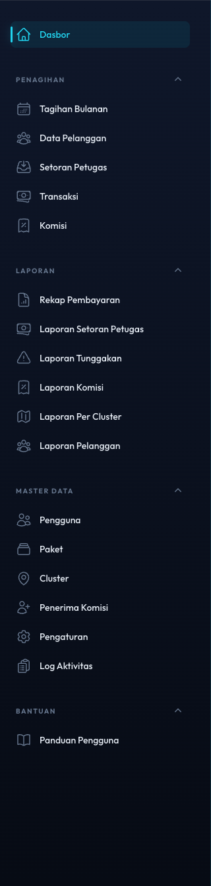
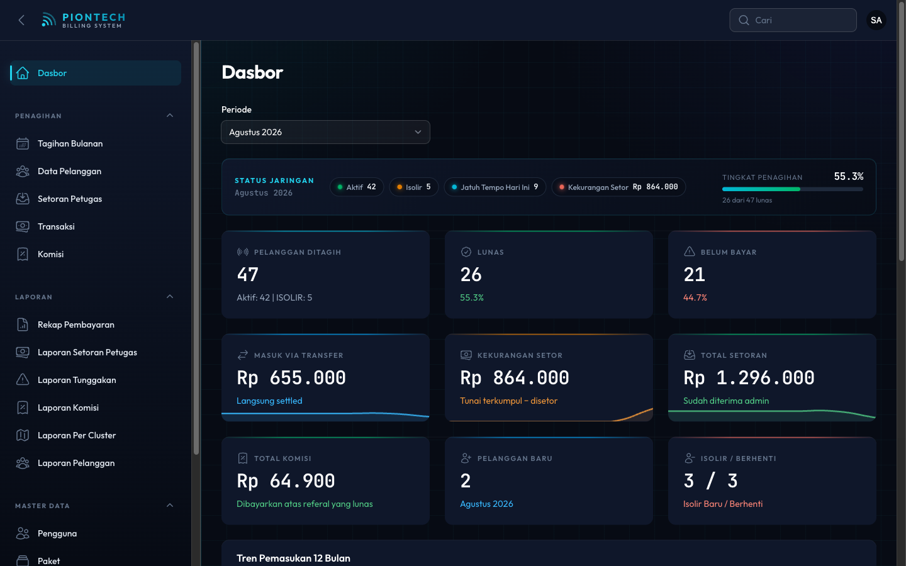
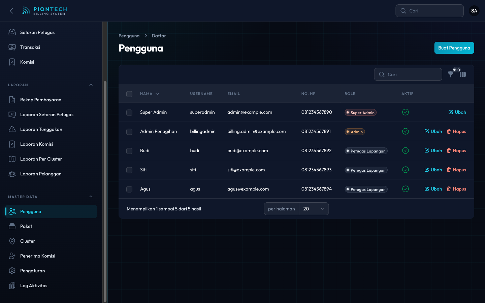
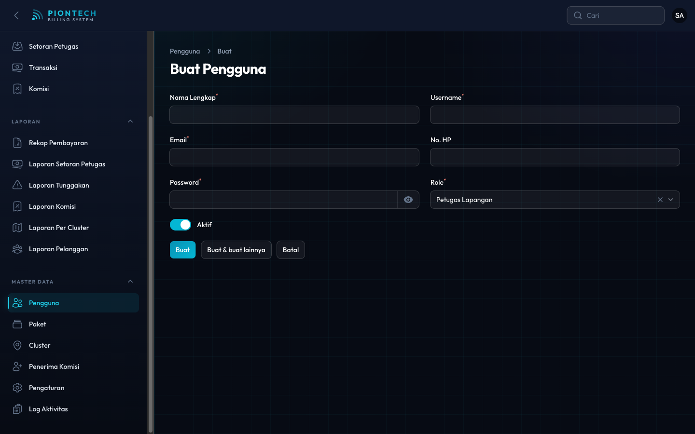
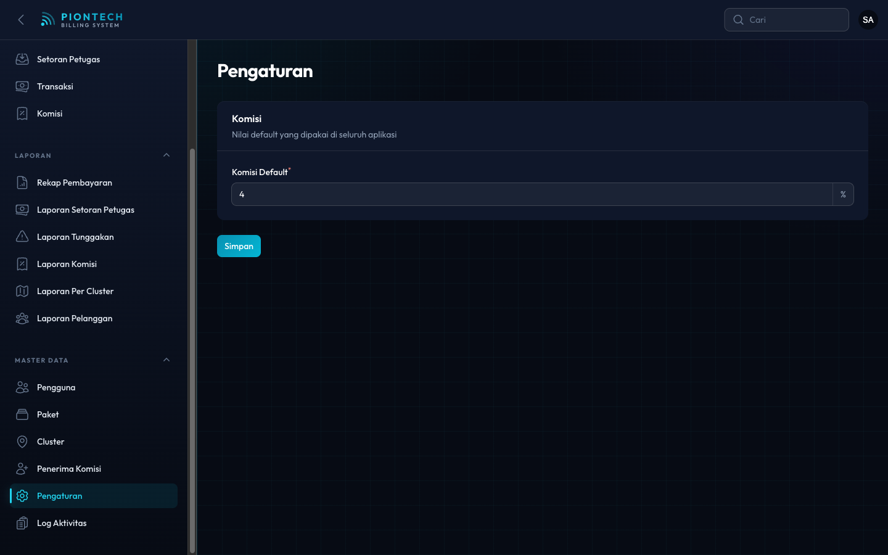
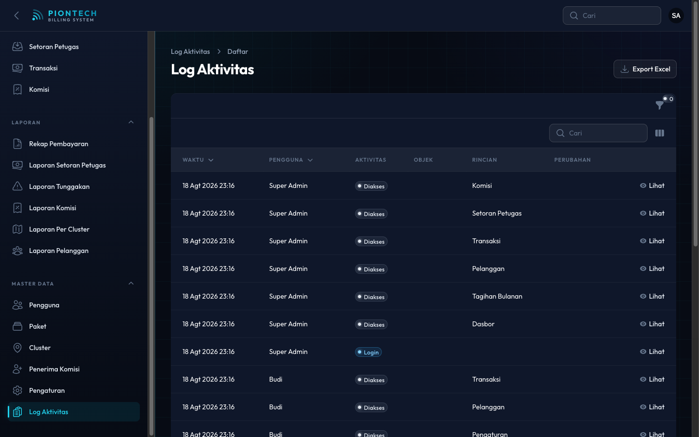
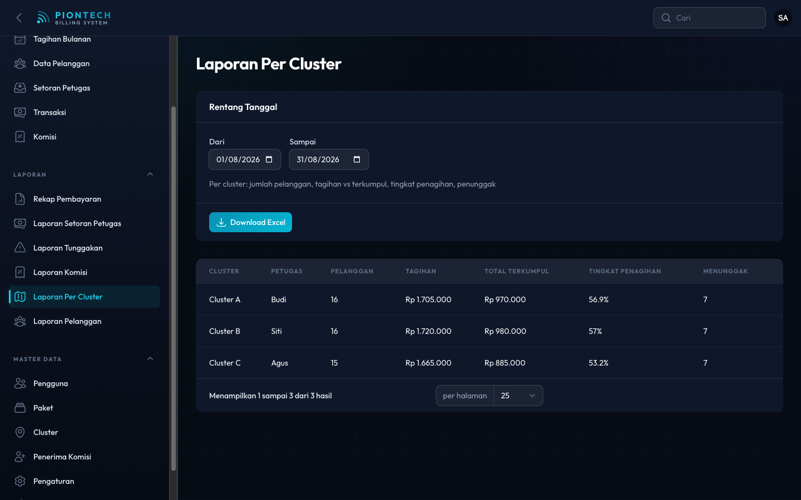
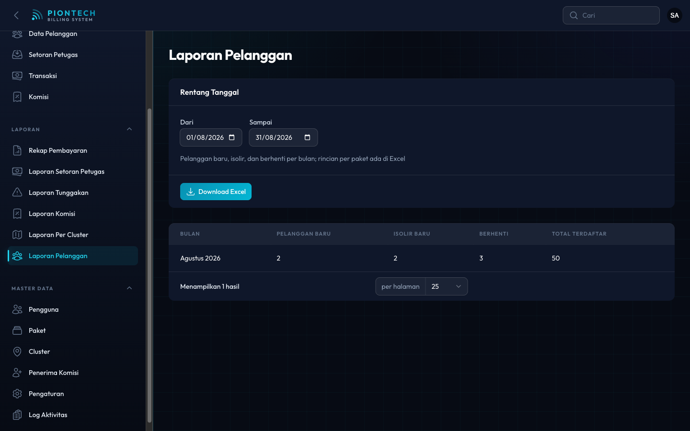

Panduan CEO
Anda memiliki akses ke seluruh sistem. Panduan ini menekankan tiga hal yang hanya bisa Anda lakukan — mengelola akun, mengatur komisi, dan memeriksa log aktivitas — serta cara membaca angka untuk mengambil keputusan.
Wewenang Anda
Khusus CEO
Pengguna (membuat & menonaktifkan akun), Pengaturan (persentase komisi default), dan Log Aktivitas (jejak perubahan data).
Sama seperti admin
Seluruh menu Penagihan, Laporan, dan Master Data. Cara memakainya sama persis — rinciannya ada di Panduan Admin Penagihan.

Menyiapkan sistem baru
Bila sistem baru dipasang, Andalah yang memulai — karena langkah pertama (membuat akun) hanya bisa dilakukan CEO.
Buat akun
Minimal satu admin dan satu petugas per wilayah.
Paket
Daftar paket & harga, termasuk satu paket Custom.
Cluster
Bagi wilayah, tentukan petugasnya.
Pelanggan
Diisi manual atau import Excel oleh admin.
Komisi
Atur persentase default, lalu daftarkan penerima komisi.
Rincian lengkap tiap langkah ada di halaman ringkasan.
Membaca Dashboard
Satu layar untuk menilai kondisi bulan berjalan. Ganti Periode untuk membandingkan bulan.

| Angka | Cara membacanya |
|---|---|
| Tingkat Penagihan | Persentase pelanggan yang sudah membayar bulan ini. Ukuran kesehatan operasional paling cepat. |
| Belum Bayar | Bila terus membesar menjelang akhir bulan, penagihan sedang tertinggal. |
| Kekurangan Setor | Uang perusahaan yang masih ada di tangan petugas. Angka ini seharusnya mendekati nol setiap akhir hari. |
| Masuk via Transfer | Porsi pembayaran yang langsung ke rekening — makin besar, makin kecil risiko uang tunai di jalan. |
| Total Komisi | Kewajiban komisi atas pembayaran yang sudah lunas. |
| Pelanggan Baru · Isolir / Berhenti | Pertumbuhan bersih. Bila Berhenti melampaui Pelanggan Baru, basis pelanggan sedang menyusut. |
| Tren Pemasukan 12 Bulan | Grafik batang tunai vs transfer per bulan, untuk melihat arah jangka panjang. |
Pemeriksaan rutin
| Kapan | Yang diperiksa | Tanda bahaya |
|---|---|---|
| Harian | Kekurangan Setor di Dashboard | Terus naik beberapa hari — uang menumpuk di petugas. |
| Mingguan | Tingkat Penagihan & Laporan Tunggakan | Tunggakan menumpuk di satu cluster tertentu. |
| Bulanan | Rekap Pembayaran & Laporan Per Cluster | Satu cluster tingkat penagihannya jauh di bawah yang lain. |
| Bulanan | Laporan Komisi | Komisi membesar tanpa diikuti pertambahan pelanggan. |
| Sesekali | Log Aktivitas | Perubahan data di luar jam kerja atau oleh akun tak terduga. |
Pengguna (akun)
Hanya Anda yang bisa membuat dan menonaktifkan akun.


- Isi Nama, Username, dan Email — username dan email tidak boleh sama dengan akun lain.
- Isi Kata Sandi awal, lalu minta yang bersangkutan menggantinya.
- Pilih Peran: Petugas Lapangan untuk penagih, Admin Penagihan untuk staf kantor, Super Admin hanya untuk pimpinan.
- Pastikan Aktif menyala, lalu tekan Buat.
Saat mengedit akun, kolom kata sandi yang dibiarkan kosong berarti kata sandi lama tidak diubah.
Pengaturan
Berisi Komisi Default (%) — persentase yang otomatis terisi saat membuat penerima komisi baru.

Log Aktivitas
Jejak siapa mengubah apa dan kapan: pembuatan dan perubahan data, akses menu, login dan logout, serta pengunduhan export.

Berguna ketika:
- Ada angka berubah dan perlu diketahui siapa yang mengubahnya.
- Terjadi selisih setoran dan perlu ditelusuri urutan kejadiannya.
- Memastikan pelanggan yang diisolir memang atas keputusan yang berwenang.
Laporan untuk keputusan
| Pertanyaan Anda | Laporan yang dibuka |
|---|---|
| Berapa uang masuk bulan ini dan dari jalur mana? | Rekap Pembayaran |
| Adakah petugas yang menahan setoran? | Laporan Setoran Petugas |
| Siapa saja yang menunggak dan berapa nilainya? | Laporan Tunggakan |
| Berapa komisi yang harus dibayar? | Laporan Komisi |
| Wilayah mana yang penagihannya paling lemah? | Laporan Per Cluster |
| Apakah jumlah pelanggan bertumbuh? | Laporan Pelanggan |


Semua laporan memakai rentang tanggal dan bisa diunduh sebagai Excel, kecuali Rekap Pembayaran yang memang hanya untuk dilihat di layar.
Menu operasional
Menu Penagihan dan Master Data bekerja persis sama seperti pada admin. Bila Anda perlu langsung turun tangan — mencatat pembayaran, mengisolir pelanggan, mengubah paket, atau mengatur cluster — ikuti Panduan Admin Penagihan.